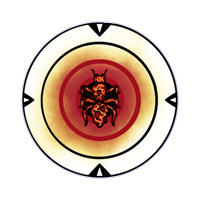
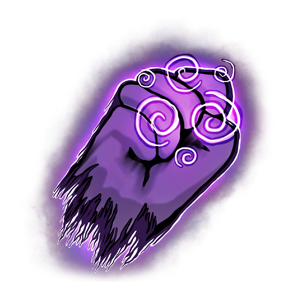
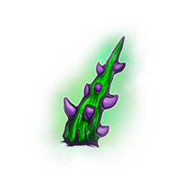
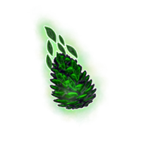
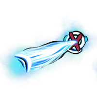

Skills
Es gibt 8 aktive Skills. Jeder Skill hat kaufbare Morphs (Shop-Upgrades, bezahlt mit Mycelium, ggf. zusätzlich Biomasse/Amber bei hohem Gesamt-Invest und kann über Evolutionen auf bis zu 4 Stufen weiterentwickelt werden: Stufe 0 (Targeting), Stufe 1 (skill-spezifisch), Stufe 2 (Spezialeffekt) und Stufe 3 (genereller Stat-Boost).
Generische Evolutionen
Diese Optionen stehen (mit Einschränkungen) bei jedem Skill zur Verfügung.
Stufe 0 – Targeting & Bonus-Schaden

Ziel = nächster Gegner (TargetNearestEnemy)- Ziel = wenigste HP (TargetLowestHP)
- Ziel = höchste Max-HP (TargetHighestMaxHP)
- Ziel = weitester Gegner (TargetFurthestEnemy)
- Ziel = fliegender Gegner (TargetFlyingEnemy)
- Bonus vs. Bodengegner: ×1.5 Schaden (bonusVsGroundMultiplier, Default 1.5)
- Bonus vs. Flieger: ×1.5 Schaden (bonusVsFlyingMultiplier, Default 1.5)
- Bonus vs. Elite-Gegner: ×1.5 Schaden (bonusVsEliteMultiplier, Default 1.5)
Stufe 2 – Spezialeffekte
-

Damage over Time (Evolution2_DamageOverTime)
Dauer 5 Sek., Tick alle 1 Sek., Basisschaden 10 × Schadensmultiplikator 0.5 -
Slow (Evolution2_Slow)
Verlangsamt getroffene Gegner. Stärke ist pro Skill unterschiedlich (siehe Tabelle unten). -
Vampire (Evolution2_Vampire)
Aktiviert Lebensentzug für diesen Skill.
| Skill | Slow |
|---|---|
| Spore Shot | 40 % |
| Thorns | 35 % |
| Spore Area | 30 % |
| Boomerang | 40 % |
| Pinecone Rain | 40 % |
| Plant Bombs | 50 % |
| Slash | 30 % |
| Beam | 40 % |
Stufe 3 – Generischer Stat-Boost
Nur wirksam, wenn der gewählte Skill ein passendes Morph/EvoMorph-Template für den jeweiligen Stat besitzt.
| Stat | Effekt | Gültig für |
|---|---|---|
| Schaden (damage) | ×1.30 (+30 %) | alle Skills mit passendem Evolution-Template |
| Cooldown (cooldown) | ×0.85 (−15 %) | Spore Shot, Thorns, Spore Area, Pinecone Rain (Skill 1/2/3/5) |
| Krit. Chance (criticalChance) | +5 %-Punkte | alle Skills |
| Krit. Schaden (criticalDamage) | +20 %-Punkte | alle Skills |
| Reichweite (range) | ×1.20 (+20 %) | Spore Shot, Slash, Beam (Skill 1/7/8) |
| Winkel (angle) | ×1.20 (+20 %) | nur Slash (Skill 7) |
| Geschwindigkeit (speed) | ×1.20 (+20 %) | nur Boomerang (Skill 4) |
| Ziel-Anzahl (targetAmount) | +1 | Thorns, Beam (Skill 2/8) |
| Anzahl Objekte (entityAmount) | +1 | Boomerang, Plant Bombs, Slash (Skill 4/6/7) |
| Durchschlagskraft (piercingAmount) | +1 | nur Spore Shot (Skill 1) |
| Lebensdauer (lifeTime) | ×1.20 (+20 %) | nur Plant Bombs (Skill 6) |
| Explosionsradius (explosionRange) | ×1.20 (+20 %) | Pinecone Rain, Plant Bombs (Skill 5/6) |
| Effektradius (effectRadius) | ×1.20 (+20 %) | nur Spore Area (Skill 3) |
1. Spore Shot
| Stat | Effekt pro Kauf | Mycelium-Preis | Grenzwert |
|---|---|---|---|
| Schaden (damage) | ×1.10 (+10 %) | 25 | – |
| Krit. Chance (criticalChance) | +1 %-Punkt | 10 | max. 100 % |
| Krit. Schaden (criticalDamage) | +10 %-Punkte | 10 | – |
| Reichweite (range) | +0.5 | 35 | – |
| Durchschlagskraft (piercingAmount) | +1 | 100 | – |
| Cooldown (cooldown) | ×0.90 (−10 %) | 50 | min. 10 % des Basis-Cooldowns |
Evolutionen (Stufe 1)
-
Sniper (Sporeshot_Evo_Sniper)
Schaden ×2.00 (+100 %), Cooldown ×2.00 (langsamer), Durchschlagskraft +3, Reichweite +20 % (zusätzlich: Trigger-Reichweite ×1.2, Projektil-Lebensdauer ×1.2) -
Minigun (Sporeshot_Evo_Minigun)
Cooldown ×0.50 (doppelte Feuerrate), Spread-Schüsse (± minigunSpreadAngle) -
Variante 3 (Sporeshot_Evo_3)
Stub – nur visuelle Variante, kein Stat-Effekt.

2. Thorns| Stat | Effekt pro Kauf | Mycelium-Preis | Grenzwert |
|---|---|---|---|
| Schaden (damage) | ×1.10 (+10 %) | 25 | – |
| Krit. Chance (criticalChance) | +1 %-Punkt | 10 | max. 100 % |
| Krit. Schaden (criticalDamage) | +10 %-Punkte | 10 | – |
| Cooldown (cooldown) | ×0.90 (−10 %) | 50 | min. 10 % des Basis-Cooldowns |
| Ziel-Anzahl (targetAmount) | +1 | 100 | max. 15 |
Evolutionen (Stufe 1)
-
Big Thorn (Thorn_Evo_BigThorn)
Schaden +75 %-Punkte, Krit. Chance +5 %-Punkte, Krit. Schaden +75 %-Punkte (VFX-Variante: großer Dorn) -
Thorn Field (Thorn_Evo_ThornField)
Cooldown ×0.75 (−25 %), Ziel-Anzahl +3 (Stub) -
Variante 3 (Thorn_Evo_3)
Stub – kein Effekt hinterlegt.
3. Spore Area
| Stat | Effekt pro Kauf | Mycelium-Preis | Grenzwert |
|---|---|---|---|
| Schaden (damage) | ×1.10 (+10 %) | 25 | – |
| Krit. Chance (criticalChance) | +1 %-Punkt | 10 | max. 100 % |
| Krit. Schaden (criticalDamage) | +10 %-Punkte | 10 | – |
| Effektradius (effectRadius) | +1.25 | 100 | max. 17 |
| Cooldown (cooldown) | ×0.90 (−10 %) | 50 | min. 10 % des Basis-Cooldowns |
Evolutionen (Stufe 1)
-
Variante 1 (Spores_Evo_1)
Radius skaliert mit dem eigenen HP-Anteil: ×1.5 bei 10 % HP bis ×0.5 bei 100 % HP (linear interpoliert) – je weniger HP, desto größer der Radius. -
Risky (Spores_Evo_2)
Krit. Schaden +75 %-Punkte. Zusätzlich: Schaden 100 % im inneren 20 %-Radius, linear abfallend auf 50 % am äußeren Rand. -
Knockback (Spores_Evo_3)
Jeder 4. Tick verursacht Knockback und doppelten Schaden.
4. Boomerang
| Stat | Effekt pro Kauf | Mycelium-Preis | Grenzwert |
|---|---|---|---|
| Schaden (damage) | ×1.10 (+10 %) | 25 | – |
| Krit. Chance (criticalChance) | +1 %-Punkt | 10 | max. 100 % |
| Krit. Schaden (criticalDamage) | +10 %-Punkte | 10 | – |
| Geschwindigkeit (speed) | +10 | 50 | – |
| Anzahl Objekte (entityAmount) | +1 | 100 | max. 15 |
Evolutionen (Stufe 1)
-
Variante 1 (Boomerang_Evo_1)
Tatsächlicher Effekt: Skalierungsfaktor ×2.5, zusätzlicher Flugradius +1.⚠ Das Asset trägt einen effectRadius ×120 %-Eintrag, der aber im evoMorphs-Template von Skill 4 fehlt → dieser Eintrag wird beim Anwenden ignoriert. -
Variante 2 (Boomerang_Evo_2)
⚠ Kein SkillEvolution-Asset vorhanden. Im Code existiert ein shouldCollectXP=true-Branch, laut Kommentar aktuell "Not used".
-
Variante 3 (Boomerang_Evo_3)
Anzahl Objekte +2 (Stub) -
Variante 4 (Boomerang_Evo_4)
Geschwindigkeit ×1.30 (+30 %), Schaden ×1.20 (+20 %); Tight Orbit – Orbit-Radius ×0.5

5. Pinecone Rain| Stat | Effekt pro Kauf | Mycelium-Preis | Grenzwert |
|---|---|---|---|
| Schaden (damage) | ×1.10 (+10 %) | 25 | – |
| Krit. Chance (criticalChance) | +1 %-Punkt | 10 | max. 100 % |
| Krit. Schaden (criticalDamage) | +10 %-Punkte | 10 | – |
| Explosionsradius (explosionRange) | +0.75 | 75 | max. 20 |
| Cooldown (cooldown) | ×0.90 (−10 %) | 50 | min. 10 % des Basis-Cooldowns |
Evolutionen (Stufe 1)
-
Variante 1 (Pinecone_Evo_1)
Schaden +150 %-Punkte (Stub) -
Variante 2 (Pinecone_Evo_2)
Krit. Chance +5 %-Punkte, Krit. Schaden +75 %-Punkte (Stub) -
Multi-Target (Pinecone_Evo_3)
Trifft 3 statt 1 Ziel (multiTargetAmount=3)
6. Plant Bombs
| Stat | Effekt pro Kauf | Mycelium-Preis | Grenzwert |
|---|---|---|---|
| Schaden (damage) | ×1.10 (+10 %) | 25 | – |
| Krit. Chance (criticalChance) | +1 %-Punkt | 10 | max. 100 % |
| Krit. Schaden (criticalDamage) | +10 %-Punkte | 10 | – |
| Explosionsradius (explosionRange) | +1 | 75 | max. 20 |
| Anzahl Objekte (entityAmount) | +1 | 50 | – |
| Lebensdauer (lifeTime) | +5 | 25 | – |
Evolutionen (Stufe 1)
-
Heal Bubble (Bomb_Plant_Evo_HealBubble)
Spawnt eine Heal-Bubble-Variante (spawnItemID=0) -
Speed Bubble (Bomb_Plant_Evo_SpeedBubble)
Spawnt eine Speed-Bubble-Variante (spawnItemID=1) -
Crit Flower (Bomb_Plant_Evo_CritFlower)
Krit. Chance +5 %-Punkte, Krit. Schaden +75 %-Punkte (Stub)
7. Slash
| Stat | Effekt pro Kauf | Mycelium-Preis | Grenzwert |
|---|---|---|---|
| Schaden (damage) | ×1.10 (+10 %) | 25 | – |
| Krit. Chance (criticalChance) | +1 %-Punkt | 10 | max. 100 % |
| Krit. Schaden (criticalDamage) | +10 %-Punkte | 10 | – |
| Reichweite (range) | +0.75 | 50 | max. 10 |
| Winkel (angle) | +15° | 45 | max. 240° |
| Anzahl Objekte (entityAmount) | +1 | 100 | max. 5 |
Evolutionen (Stufe 1)
-
Mirror Slash (Slash_Evo_1)
Zweiter Slash in entgegengesetzter Richtung (evoMirrorSlash=true) -
Long Sword (Slash_Evo_2)
Schaden ×1.50 (+50 %), Reichweite ×1.50 (+50 %), Winkel +10°; Cooldown ×4 über evo2CooldownMultiplier (evoLongSword=true) -
Crowd Cleaver (Slash_Evo_3)
Schadensmultiplikator = 1.0 + (Trefferanzahl − 3) × 0.3, minimal 0.3 (evoManyTargetsBonus=true)

8. Beam| Stat | Effekt pro Kauf | Mycelium-Preis | Grenzwert |
|---|---|---|---|
| Schaden (damage) | ×1.10 (+10 %) | 25 | – |
| Krit. Chance (criticalChance) | +1 %-Punkt | 10 | max. 100 % |
| Krit. Schaden (criticalDamage) | +10 %-Punkte | 10 | – |
| Reichweite (range) | +0.5 | 50 | max. 10 |
| Ziel-Anzahl (targetAmount) | +1 | 100 | max. 10 |
Evolutionen (Stufe 1)
-
Stacking Beam (Beam_Evo_1)
Schaden steigt pro Tick, solange die Verbindung hält (+evo1InitialGrowthRate/Tick, Decay ×evo1GrowthDecayFactor) -
Chain Lightning (Beam_Evo_2)
Springt auf evo2ChainCount weitere Ziele im Radius evo2ChainRange, Schaden ×evo2ChainDamageMultiplier -
Pierce (Beam_Evo_3)
Durchschlägt Ziele mit Breite pierceBeamWidth, Schaden ×pierceDamageMultiplier